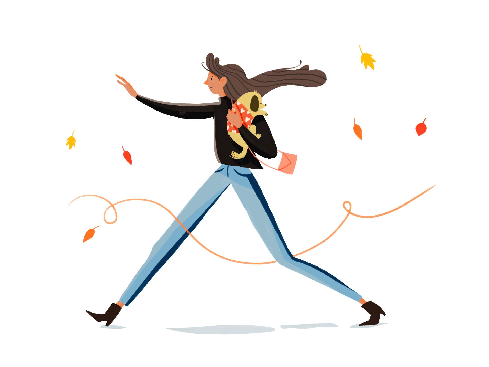

Stefan Vladimirov
Chief Creative at Swipes. Loves order and beauty. Always striving to achieve the balance between function
and aesthetics.
Product illustrator, movie junkie
Short intro
I'm an illustrator, I draw, sketch and I’m deeply involved in visualizing difficult content in a way that anyone (even your grandma) could wrap their minds around. In general I make information easier to perceive by using close to home metaphors and references that should look cool and pretty.
When did you find your passion for illustration?
Never had to go looking for it, it has always been something that I’ve been doing since an early age. I wouldn’t call it passion for drawing, I’d call it a way of perceiving everything that’s happening around you. I think it has to do with associative thinking, combining you visual perceptions with your analytic ones.
How long have you been illustrating?
Professionally I’ve been a product illustrator for about an year.
Describe the beginning of your day
I’m a creature of the night, that’s when I’m most proactive, so early mornings for me could be very unproductive. To get my brain started I usually listen to podcasts in the morning, I check my emails and go over my plans for the day and make sure I haven’t missed an important call or appointment.
What’s your workspace?
At home anything could be a workspace, wherever my laptop is - it’s a workspace for me. At work I’m really trying to keep a clean desk, minding that minimalism is the new cool thing, but honestly I really like surrounding myself with memorabilia, plants and books I never read, but I think I would.Sometimes I buy books just for the cover aesthetics and I’m not even ashamed of that.
What’s your source of inspiration?
Recently I’ve developed the ‘Pinterest Mom” syndrome, but there is an amazing illustrative inspiration there. Besides that I’m a big old-school Disney and Cartoon Network fan, but the studio Ghibli aesthetics are the ones everyone should dive into.
What’s your source for inspiration?
Recently I’ve developed the ‘Pinterest Mom” syndrome, but there is an amazing illustrative inspiration there. Besides that I’m a big old-school Disney and Cartoon Network fan, but the studio Ghibli aesthetics are the ones everyone should dive into.
What works are you most proud of?
I’m proud of all of the work I’ve done because I’ve never imagined I could actually benefit in any way from my illustrations, at least not in the scale it has been growing the past year. I’ve always loved what I’ve created and never been insecure or ashamed of it, so every new illustration that pops out is a new personal favorite, haha.
What are the tools you use in your day to day life?
I use a mouse, a tablet, a tablet pen, keyboard and when it’s a very very special assignment - a pencil to sketch it out first.
Do you follow any set of principles for your work?
Yes, a couple.
What’s your favourite movie?
The Grand Budapest Hotel - I really like the fast pacing and aesthetically pleasing scenes of Wes Anderson’s movies. They make you think, laugh and just enjoy the most amazing colour palette sources you could ever find.

What's your favourite book?
Not sure if I have one, but the one that left a permanent mark on my mind must be ’1984’. Very applicable till this day. I’m a fan of social dystopian works.
What advice would you give to people that start out with Illustration?
Being a stubborn egocentric artist doesn’t set you off on a good start if you want to be a professional. Get over your ego, your insecurities, your fear and just go out there. Nothing just magically makes you good or successful. Invest in yourself, set your priorities straight in a way that after a couple of years you could look back at yourself and think “Well I really sacrificed going out for a few drinks after work or scrolling aimlessly through social media for hours, but what I have achieved is much more important than those short term acts of enjoyment.’’ I promise you that investing in yourself now would never influence you badly. Don’t wait for someone to motivate you, don’t wait for inspiration, you must be your own mentor.

Have you ever thought of empowering your creative community in any way, shape or form?
I’ve been a part of a creative community called Fill and Stoke that focuses on creating events where professionals and enthusiasts in the design community could share their working process, their tips and tricks and ask whatever questions they have about being and working as a creator.
Meet Diana on the Social Media
Dribbble TwitterThank you for the opportunity, Diana. It was amazing that we could give a closer look at your creative nature with this interview.
Recommended reads